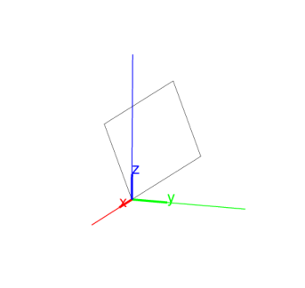
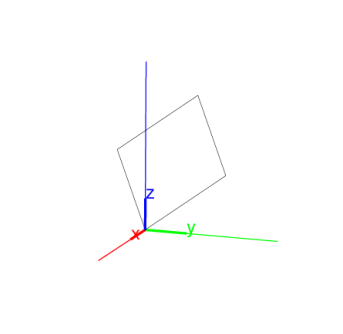

14.8.3 Rectangles in space: rectangle
See Section 13.9.3 for rectangles in the plane.
The rectangle command returns and draws a rectangle. It can
take its arguments in different ways.
Three points.
-
rectangle takes three mandatory arguments and two
optional arguments:
-
A,B,P, three points.
- Optionally, var1,var2, two variable names.
- rectangle(A,B,P ⟨var1,var2⟩)
returns and draws the rectangle ABCD, in the plane ABP, oriented
to that angle BAP is positive, and with the length of side AD
equals AP.
If the arguments var1 and var2 are given, they
will be assigned to the vertices C and D.
Example
Input:
| A:= point(0,0,0); |
| B:= point(3,3,3); |
| P:= point(0,0,3) |
| rectangle(A,B,P)
|
Output:

Three points and a real number.
-
rectangle takes three mandatory arguments and two
optional argument:
-
A,B, two points.
- [P,k], a list consisting of a point P and a real number
k.
- Optionally, var1,var2, two variable names.
- rectangle(A,B,[P,k] ⟨var1,var2⟩)
returns and draws the rectangle ABCD, which is in the plane ABP,
and with the length of AD equal to |k| times the length of AB.
Angle BAD and angle BAP have the same orientation if k is
positive and opposite orientation if k is negative.
If the arguments var1 and var2 are given, they
will be assigned to the vertices C and D.
Examples
-
Input:
| A:= point(0,0,0); |
| B:= point(3,3,3); |
| P:= point(0,0,3) |
| rectangle(A,B,[P,1/2])
|
Output:

- Input:
| rectangle(A,B,P,C,D) |
| simplify(coordinates(C)), simplify(coordinates(D))
|
Output:
⎡
⎢
⎢
⎣ | − | | ,− | | , | √ | | ⎤
⎥
⎥
⎦ | , | ⎡
⎢
⎢
⎣ | | , | | , | √ | | +3 | ⎤
⎥
⎥
⎦ |